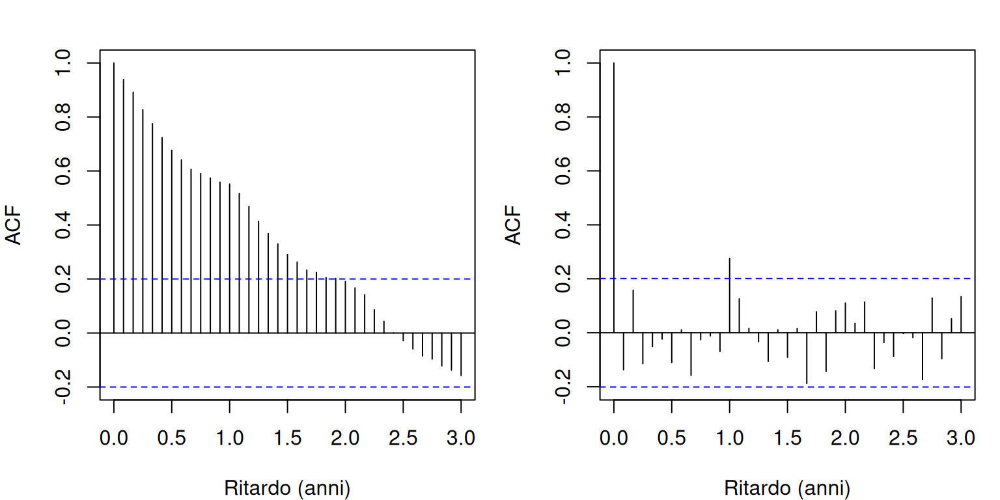
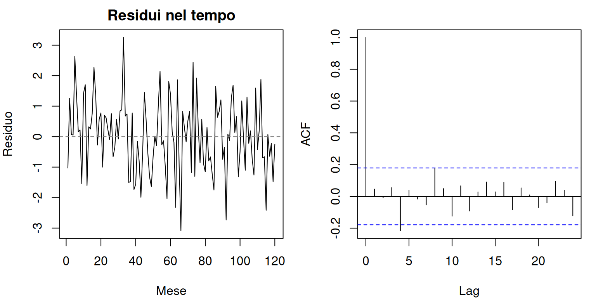

Il tasso di disoccupazione di questo mese non è un’osservazione isolata. Assume significato quando viene confrontato con i mesi precedenti, con lo stesso mese degli anni passati e con la traiettoria di lungo periodo. Una serie storica è una sequenza di osservazioni dello stesso fenomeno ordinate nel tempo. L’ordine non è un dettaglio: contiene informazione.
Le serie storiche sono centrali nell’analisi economica e sociale. Permettono di descrivere l’evoluzione del PIL, riconoscere la stagionalità dei flussi turistici, monitorare la spesa pubblica, individuare cambiamenti nel mercato del lavoro e formulare previsioni. Presentano però una difficoltà specifica: osservazioni vicine nel tempo sono spesso dipendenti. I metodi che trattano i dati come liberamente intercambiabili possono quindi produrre conclusioni eccessivamente sicure o del tutto fuorvianti.
Questo capitolo introduce la logica dei modelli temporali e della previsione. Le trasformazioni, le variazioni e i numeri indice sono approfonditi nei capitoli dedicati. L’impostazione generale segue il percorso classico dall’esplorazione grafica alla decomposizione, alla modellazione dell’autocorrelazione e alla verifica delle previsioni (Hyndman e Athanasopoulos 2014).
4.1 Osservare un fenomeno nel tempo
Indichiamo una serie osservata con
\[
y_1,y_2,\ldots,y_T,
\]
dove \(y_t\) è il valore rilevato al tempo \(t\) e \(T\) è il numero totale di osservazioni. L’indice \(t\) può rappresentare anni, trimestri, mesi, giorni o intervalli ancora più brevi. In questo capitolo considereremo tempi discreti e, salvo diversa indicazione, equidistanti.
La notazione maiuscola \(Y_t\) sarà usata quando parliamo del valore come variabile aleatoria, cioè prima di osservarlo. L’insieme \(\{Y_t\}\) è un processo stocastico: una famiglia di variabili aleatorie ordinate nel tempo. La sequenza effettivamente osservata \(\{y_t\}\) è una sua realizzazione. Questa distinzione permette di rappresentare l’incertezza sui valori futuri senza supporre che il passato si ripeta esattamente.
4.1.1 Serie storiche e dati trasversali
Una cross-section confronta più unità nello stesso periodo, per esempio il reddito di 100 famiglie nel 2025. In quel caso l’ordine delle righe non ha normalmente significato. Una serie storica segue invece la stessa unità o lo stesso aggregato in periodi successivi, per esempio il reddito medio nazionale dal 2000 al 2025. Riordinare casualmente le osservazioni distruggerebbe trend, stagionalità e dipendenza temporale.
Non è corretto affermare che tutte le osservazioni trasversali siano indipendenti o che ogni serie presenti dipendenza. Si tratta di proprietà da valutare. Nei dati territoriali, per esempio, unità vicine possono essere associate; una serie di rumore bianco, invece, non presenta autocorrelazione pur essendo ordinata nel tempo.
4.1.2 Frequenza, calendario e natura della misura
La frequenza indica quante osservazioni sono disponibili in un ciclo temporale di riferimento. Una serie annuale ha frequenza 1, una trimestrale 4 e una mensile 12. La frequenza determina quali strutture possono essere studiate: con dati annuali non possiamo identificare una stagionalità mensile.
Occorre anche distinguere:
una variabile di stock, misurata in un istante, come il numero di disoccupati al 31 dicembre;
una variabile di flusso, accumulata durante un intervallo, come la spesa pubblica sostenuta in un anno;
una media di periodo, come il tasso medio mensile di inflazione.
Sommare dodici stock mensili non produce uno stock annuale. Al contrario, i flussi mensili possono essere sommati se definizioni e prezzi sono coerenti. Prima di modellare una serie bisogna quindi documentare frequenza, calendario, unità di misura, eventuale destagionalizzazione, prezzi correnti o costanti e revisioni dei dati.
AvvisoFrequenze più alte non significano sempre più informazione
Dati mensili o giornalieri contengono più osservazioni, ma anche rumore, effetti di calendario e dipendenze più complesse. Aggregare può nascondere eventi brevi; disaggregare senza dati reali può invece inventare una precisione inesistente.
4.2 Un esempio mensile simulato
Useremo una serie mensile simulata di accessi al trasporto pubblico, espressi in migliaia. La serie va da gennaio 2018 a dicembre 2025 e contiene un trend crescente, una struttura stagionale, una caduta temporanea nel 2020–2021 e un cambiamento di livello dal 2023. È costruita soltanto a fini didattici e non rappresenta una città reale.
Jan Feb Mar Apr May Jun Jul Aug Sep Oct Nov Dec
2018 97.3 96.3 102.0 103.8 104.9 103.5 110.3 108.0 106.5 102.6 100.9 98.5
La funzione ts() conserva la frequenza e il periodo iniziale. R può così riconoscere che gennaio 2020 viene dodici osservazioni dopo gennaio 2019. Mostriamo soltanto il primo anno perché l’output completo sarebbe lungo; il grafico temporale è più informativo.
Accessi mensili simulati al trasporto pubblico, in migliaia.
La media mensile passa da 102,9 mila accessi nel 2018 a 131,3 mila nel 2025. Nel 2020 scende a 86,2 mila. Il grafico mostra inoltre picchi e minimi che tendono a ripetersi nello stesso periodo dell’anno. Questi risultati sono caratteristiche della simulazione, non stime di un fenomeno reale.
4.3 Le componenti di una serie storica
Separare idealmente una serie in componenti aiuta a distinguere movimenti persistenti, regolarità di calendario e variazioni inattese.
Il trend rappresenta l’evoluzione di lungo periodo. Può crescere, diminuire o cambiare pendenza.
La stagionalità è una variazione che si ripete con periodo noto e stabile, per esempio ogni dodici mesi o ogni quattro trimestri.
Il ciclo comprende oscillazioni di durata non fissa, spesso più lunghe della stagione, come espansioni e recessioni economiche.
La componente irregolare o resto raccoglie ciò che le altre componenti non spiegano: rumore, shock, errori di misura e strutture non modellate.
Stagione e ciclo non sono sinonimi. Agosto torna ogni dodici mesi, mentre una fase recessiva non ha una durata prestabilita. Inoltre, una decomposizione non è unica: ciò che appare come trend con un metodo può essere attribuito al ciclo con un altro.
4.3.1 Decomposizione additiva e moltiplicativa
Nel modello additivo la serie è rappresentata come
\[
Y_t=T_t+S_t+C_t+I_t,
\]
dove \(T_t\) è il trend, \(S_t\) la stagionalità, \(C_t\) il ciclo e \(I_t\) la componente irregolare al tempo \(t\). La forma additiva è appropriata quando l’ampiezza delle oscillazioni stagionali rimane circa costante al variare del livello.
Nel modello moltiplicativo,
\[
Y_t=T_t\times S_t\times C_t\times I_t,
\]
le fluttuazioni sono proporzionali al livello della serie. È adatto soltanto a valori positivi. Applicando il logaritmo, i prodotti diventano somme: per esempio \(\log(Y_t)=\log(T_t)+\log(S_t)+\log(C_t)+\log(I_t)\). Questa equivalenza collega la decomposizione moltiplicativa alle trasformazioni discusse nel capitolo successivo.
4.3.2 Una decomposizione con R
La procedura STL separa la serie in stagionalità, trend e resto. Non identifica una componente ciclica distinta: il ciclo viene assorbito soprattutto nel trend o nel resto. Impostiamo una stagione periodica e una stima robusta, meno sensibile a valori eccezionali.
Decomposizione STL degli accessi simulati: dati, stagionalità, trend e resto.
La componente stagionale stimata è positiva tra la tarda primavera e l’estate e negativa soprattutto negli ultimi mesi dell’anno. La caduta del 2020 e la ripresa successiva compaiono nel trend e nel resto. Questo mostra un limite importante: uno shock prolungato può contaminare la stima delle componenti e non deve essere scambiato automaticamente per normale stagionalità.
4.4 Stazionarietà: una base relativamente stabile
Molti modelli temporali cercano regolarità che possano essere trasferite dal passato al futuro. Questo è più plausibile quando la serie oscilla attorno a un livello stabile e la sua variabilità non cambia sistematicamente.
In termini intuitivi, una serie è stazionaria se le sue proprietà statistiche non dipendono dal momento in cui viene osservata. Per la stazionarietà debole richiediamo:
Il simbolo \(E(Y_t)\) indica il valore medio teorico, costante e pari a \(\mu\); \(Var(Y_t)\) è la varianza, costante e pari a \(\sigma^2\); \(Cov(Y_t,Y_{t-k})\) è la covarianza tra valori distanti \(k\) periodi e dipende dal ritardo \(k\), non dalla data \(t\). Non chiediamo che la serie sia piatta: può oscillare e presentare cicli non periodici. Trend, stagionalità regolare o varianza crescente sono invece segnali di non stazionarietà.
La stazionarietà non è una proprietà che un grafico possa certificare definitivamente. È un’ipotesi di lavoro da valutare con grafici, autocorrelazioni, conoscenza del fenomeno ed eventualmente test specifici. Un campione breve può rendere stazionaria una serie che, osservata più a lungo, presenta un cambiamento strutturale.
4.4.1 Differenze e trasformazioni
Una trasformazione può rendere più stabile una serie. La prima differenza è
\[
\Delta Y_t=Y_t-Y_{t-1},
\]
e misura il cambiamento assoluto tra due periodi consecutivi. Per dati mensili, la differenza stagionale
\[
\Delta_{12}Y_t=Y_t-Y_{t-12}
\]
confronta lo stesso mese in anni consecutivi. In generale, \(\Delta_mY_t=Y_t-Y_{t-m}\), dove \(m\) è il periodo stagionale. Differenziare può rimuovere trend o stagionalità, ma riduce il numero di osservazioni e cambia la domanda: non si modella più il livello, bensì la variazione.
Serie simulata in livello, prima differenza e differenza stagionale.
par(mfrow =c(1, 1))
Le differenze attenuano il trend, ma gli shock generano variazioni molto grandi. La differenza stagionale conserva inoltre il cambiamento di livello e la ripresa graduale. Non esiste una trasformazione che renda innocui eventi sostantivamente importanti: questi devono essere riconosciuti e, se necessario, modellati esplicitamente.
AvvisoDifferenziare troppo
Applicare differenze ripetute finché il grafico “sembra casuale” può introdurre dipendenza artificiale e amplificare il rumore. Ogni differenza deve avere un’interpretazione: variazione sul periodo precedente oppure rispetto alla stessa stagione dell’anno passato.
4.5 Autocorrelazione e memoria temporale
L’autocorrelazione confronta una serie con una versione ritardata di sé stessa. L’autocorrelazione teorica al ritardo, o lag, \(k\) è
Il coefficiente \(\rho_k\) varia tra -1 e 1. Un valore positivo indica che osservazioni sopra la media tendono a essere seguite, dopo \(k\) periodi, da osservazioni sopra la media; un valore negativo indica alternanza. Con dati mensili, un valore elevato a \(k=12\) può segnalare stagionalità annuale.
La funzione di autocorrelazione (ACF) raccoglie le autocorrelazioni per diversi ritardi. La funzione di autocorrelazione parziale (PACF) misura il legame tra \(Y_t\) e \(Y_{t-k}\) dopo avere tenuto conto dei ritardi intermedi \(Y_{t-1},\ldots,Y_{t-k+1}\). La PACF sarà utile per distinguere alcune strutture autoregressive.
par(mfrow =c(1, 2), mar =c(4, 4, 2, 1))acf( accessi_ts,lag.max =36,main ="Serie in livello",xlab ="Ritardo (anni)")acf(diff(accessi_ts),lag.max =36,main ="Prima differenza",xlab ="Ritardo (anni)")

ACF degli accessi simulati in livello e dopo la prima differenza.
par(mfrow =c(1, 1))
In livello l’autocorrelazione al primo ritardo è circa 0,94 e decresce lentamente. Questo andamento riflette soprattutto trend, stagionalità e cambiamenti persistenti; non basta per concludere che esista un semplice meccanismo autoregressivo. Dopo la prima differenza, la dipendenza a breve si riduce, mentre rimangono tracce della struttura stagionale e degli shock.
Le linee tratteggiate dell’ACF sono limiti approssimativi calcolati sotto l’ipotesi di assenza di autocorrelazione. Un singolo picco appena oltre il limite può verificarsi per caso quando si osservano molti ritardi. Occorre interpretare l’insieme dei picchi e verificare i residui del modello, non selezionare soltanto il valore più appariscente.
4.5.1 Rumore bianco
Una serie \(\{\varepsilon_t\}\) è rumore bianco se ha media zero, varianza costante e autocorrelazione nulla a ogni ritardo non nullo. Il simbolo \(\varepsilon_t\) rappresenta un’innovazione: una nuova componente non prevedibile usando il passato della serie.
Rumore bianco non significa necessariamente distribuzione normale. La normalità è un’ipotesi aggiuntiva, utile soprattutto per costruire intervalli di previsione. Se i residui di un modello presentano autocorrelazione, rimane informazione temporale non utilizzata e il modello può essere migliorato.
4.6 Modelli AR, MA e ARMA
Una volta ottenuta una serie approssimativamente stazionaria, possiamo rappresentarne la memoria con modelli parsimoniosi. L’obiettivo non è riprodurre ogni oscillazione, ma descrivere la parte prevedibile lasciando residui simili a rumore bianco.
4.6.1 Modello autoregressivo
Un modello autoregressivo di ordine \(p\), abbreviato AR(\(p\)), usa i \(p\) valori precedenti della serie:
La costante \(\mu\) è il livello medio della serie; \(\phi_1,\ldots,\phi_p\) sono i coefficienti autoregressivi; \(p\) è il numero di ritardi inclusi; \(\varepsilon_t\) è rumore bianco. In un AR(1), un coefficiente \(\phi_1=0{,}7\) indica che il 70% dello scostamento dal livello medio tende a persistere nel periodo successivo. Non significa che il valore aumenti del 70%.
Per un AR(1) stazionario deve valere \(|\phi_1|<1\). Se \(\phi_1\) è vicino a 1, gli shock si esauriscono lentamente; se è negativo, la serie tende ad alternarsi sopra e sotto la media. Per ordini maggiori le condizioni di stazionarietà sono più articolate e vengono gestite dal software.
4.6.2 Modello a media mobile
Un modello a media mobile di ordine \(q\), MA(\(q\)), usa l’innovazione corrente e le \(q\) innovazioni precedenti:
dove \(\theta_1,\ldots,\theta_q\) misurano quanto gli shock passati incidono sul valore corrente. In un MA(1), uno shock ha un effetto diretto per due periodi: quello in cui avviene e il successivo.
Il modello MA non deve essere confuso con la media mobile usata per lo smoothing. Lo smoothing calcola medie di osservazioni passate per rendere visibile il trend; il modello MA combina innovazioni non osservate per rappresentare la dinamica probabilistica.
Gli indici \(i\) e \(j\) contano rispettivamente i ritardi autoregressivi e quelli delle innovazioni. Il modello ARMA è pensato per serie stazionarie. In linea ideale, la PACF di un AR(\(p\)) si interrompe dopo il ritardo \(p\), mentre l’ACF di un MA(\(q\)) si interrompe dopo \(q\); nei modelli misti entrambe tendono a decadere. Nei campioni reali questi schemi sono raramente netti: ACF e PACF suggeriscono modelli candidati, ma non sostituiscono confronto e diagnostica.
4.6.4 Simulare e stimare un AR(1)
Simuliamo gli scostamenti mensili di un indicatore dalla propria media di lungo periodo. Il processo generatore ha coefficiente autoregressivo 0,65; nella pratica questo valore sarebbe ignoto e dovrebbe essere stimato.
Il coefficiente stimato è 0,681, vicino al valore 0,65 usato nella simulazione. Uno scostamento di un punto nel mese corrente è associato, in media, a uno scostamento di circa 0,68 punti nello stesso verso il mese successivo. La media stimata è 0,061, coerente con una serie costruita per oscillare attorno a zero. L’errore standard quantifica la precisione campionaria della stima, non la variabilità futura dell’indicatore.
4.6.5 Diagnostica dei residui
Il residuo al tempo \(t\) è
\[
e_t=y_t-\widehat{y}_{t\mid t-1},
\]
dove \(y_t\) è il valore osservato e \(\widehat{y}_{t\mid t-1}\) è la previsione di \(y_t\) costruita usando le informazioni disponibili fino a \(t-1\). Un buon modello non deve lasciare nei residui un andamento prevedibile.
residui_ar1 <-residuals(modello_ar1)par(mfrow =c(1, 2), mar =c(4, 4, 2, 1))plot( residui_ar1,type ="l",main ="Residui nel tempo",xlab ="Mese",ylab ="Residuo")abline(h =0, lty =2, col ="grey50")acf( residui_ar1,lag.max =24,main ="ACF dei residui")

Residui e loro funzione di autocorrelazione per il modello AR(1) simulato.
Il test di Ljung–Box esamina congiuntamente le autocorrelazioni residue fino al ritardo 12. Il p-value è 0,172: non emerge evidenza sufficiente per respingere l’ipotesi di assenza di autocorrelazione. Questo non prova che il modello sia vero; indica soltanto che questa diagnostica non rileva memoria residua rilevante. Vanno controllati anche stabilità della varianza, valori anomali e adeguatezza sostantiva.
4.7 Da ARMA ad ARIMA e SARIMA
Se la serie non è stazionaria, un modello ARMA può essere applicato a una sua versione differenziata. Un modello ARIMA(\(p,d,q\)) combina:
\(p\) termini autoregressivi;
\(d\) differenze ordinarie;
\(q\) termini a media mobile.
La lettera I significa integrated e segnala che le differenze devono essere reintegrate per riportare le previsioni alla scala originale. Un ARIMA(\(1,1,0\)), per esempio, applica un AR(1) alle prime differenze della serie.
Per una serie stagionale si può usare la notazione
\[
ARIMA(p,d,q)(P,D,Q)_m,
\]
dove \((p,d,q)\) descrive la dinamica non stagionale, \((P,D,Q)\) la dinamica stagionale e \(m\) il numero di osservazioni per ciclo, per esempio \(m=12\) per dati mensili. \(D\) indica il numero di differenze stagionali. Questi modelli sono spesso chiamati SARIMA.
L’ordine più complesso non è automaticamente migliore. Una procedura ragionevole consiste nel:
rappresentare la serie e documentare valori anomali o break;
applicare trasformazioni motivate;
differenziare soltanto quanto necessario;
usare ACF e PACF per individuare pochi modelli candidati;
confrontare criteri informativi e prestazioni previsive;
controllare che i residui siano compatibili con rumore bianco;
produrre previsioni con la relativa incertezza.
Una selezione automatica può aiutare nei passaggi centrali, ma non riconosce da sola errori di definizione, cambiamenti istituzionali o shock destinati a non ripetersi.
4.8 Prevedere non significa indovinare
Una previsione usa l’informazione disponibile fino al tempo \(T\) per stimare \(Y_{T+h}\), dove \(h\) è l’orizzonte di previsione. Indichiamo la previsione puntuale con \(\widehat{y}_{T+h\mid T}\): il pedice significa “valore per \(T+h\) previsto usando informazioni fino a \(T\)”.
La previsione puntuale è un singolo valore. Un intervallo di previsione esprime invece un insieme di valori plausibili e dovrebbe allargarsi quando l’orizzonte aumenta. L’intervallo incorpora l’incertezza delle innovazioni future sotto il modello scelto, ma spesso non include pienamente incertezza sui parametri, scelta del modello o futuri cambiamenti strutturali.
Previsioni a sei periodi del modello AR(1) e intervalli approssimativi al 95%.
La previsione per il primo mese è -1,25 punti e poi si avvicina progressivamente alla media stimata: l’effetto dell’ultimo scostamento si attenua perché \(|\widehat{\phi}_1|<1\). L’intervallo al 95% è circa da -3,59 a 1,09 al primo passo e diventa più ampio nei passi successivi. “95%” è una proprietà della procedura sotto le ipotesi del modello, non la garanzia che ogni singolo intervallo contenga il futuro.
4.8.2 Metodi di riferimento
Un modello elaborato deve essere confrontato con previsioni semplici. Il metodo naïve usa l’ultimo valore osservato per tutti gli orizzonti. Il metodo stagionale naïve usa il valore dell’ultima stagione corrispondente: per gennaio 2025, per esempio, usa gennaio 2024.
Separiamo il 2025 della serie degli accessi come insieme di test. I modelli vengono costruiti con i dati fino al 2024; solo dopo confrontiamo le previsioni con i valori realmente riservati al test.
MAE RMSE
naive 10.39 11.69
stagionale_naive 3.17 3.83
Il MAE è la media degli errori assoluti; il RMSE è la radice della media degli errori quadratici e penalizza maggiormente gli errori grandi. Nel test simulato, il metodo stagionale naïve ottiene MAE 3,17 e RMSE 3,83, nettamente inferiori a 10,39 e 11,69 del naïve non stagionale. La stagionalità contiene quindi informazione previsiva utile. Il risultato riguarda questo specifico periodo di test: un solo confronto non stabilisce quale metodo sia sempre migliore.
AvvisoErrore frequente: valutare sul campione di stima
Un modello flessibile può adattarsi molto bene ai dati usati per stimarlo e prevedere male nuovi periodi. Per confrontare metodi previsivi occorre preservare l’ordine temporale: si stima sul passato e si valuta su un blocco successivo, senza mescolare casualmente osservazioni future e passate.
4.9 Shock, valori anomali e cambiamenti strutturali
Un’osservazione insolita può avere significati diversi:
un outlier additivo altera soprattutto un singolo periodo, per esempio un errore di registrazione;
uno shock temporaneo produce un effetto che si esaurisce gradualmente;
un cambiamento di livello sposta persistentemente la media della serie;
un break di tendenza modifica la velocità o la direzione del trend;
un cambiamento stagionale altera ampiezza o forma della stagione.
La distinzione è sostantiva prima che statistica. Una revisione della definizione di disoccupato, una riforma fiscale e un errore di battitura richiedono trattamenti differenti. Correggere un errore documentato è appropriato; cancellare una recessione perché peggiora il modello significa eliminare il fenomeno di interesse.
I modelli ARIMA assumono che la struttura stimata sia sufficientemente stabile nel periodo di previsione. Un break rende questa estrapolazione fragile. Si possono introdurre variabili di intervento, stimare modelli separati prima e dopo il cambiamento o accorciare il campione, ma ogni scelta richiede una giustificazione e riduce l’informazione disponibile.
4.10 Quando i dati non sono gaussiani
I modelli ARMA e ARIMA sono spesso presentati assumendo innovazioni gaussiane. L’ipotesi è comoda per costruire intervalli, ma non è sempre plausibile.
Una serie di conteggi, come il numero giornaliero di proteste o di accessi a un servizio, assume valori interi non negativi. Se i valori sono piccoli o presentano molti zeri, un modello lineare può produrre previsioni negative e intervalli poco credibili. Modelli log-lineari e modelli autoregressivi per conteggi, come gli INAR, rispettano meglio questa struttura.
Se l’esito è uno stato qualitativo, per esempio “recessione/espansione” oppure il partito al governo, l’oggetto di interesse può essere la probabilità di passare da uno stato all’altro. Le catene di Markov descrivono queste transizioni. In tutti questi casi la scelta del modello deve partire dal supporto della variabile e dalla domanda, non dalla disponibilità di una funzione software. Una trattazione formale di tali modelli va oltre gli obiettivi introduttivi del capitolo.
4.11 Una procedura per l’analisi delle serie storiche
Una sequenza di lavoro trasparente è la seguente:
definire fenomeno, unità, frequenza, calendario e periodo;
documentare fonte, revisioni, valori mancanti e trasformazioni già applicate;
rappresentare la serie e cercare trend, stagionalità, shock e break;
distinguere descrizione, previsione e valutazione causale;
verificare se la stazionarietà è un’approssimazione plausibile;
applicare differenze o trasformazioni soltanto quando interpretabili;
proporre pochi modelli e confrontarli con riferimenti semplici;
controllare residui e stabilità della struttura;
valutare le previsioni su periodi non usati nella stima;
comunicare previsioni puntuali, intervalli e limiti.
Un modello temporale sfrutta regolarità del passato. Può essere utile per programmare servizi, costruire scenari e quantificare l’incertezza, ma non trasforma automaticamente una successione temporale in un nesso causale. Se una politica viene introdotta nello stesso momento in cui un indicatore cambia, la coincidenza è un punto di partenza per l’analisi, non la sua conclusione.
Hyndman, Rob J., e George Athanasopoulos. 2014. Forecasting: Principles and Practice. OTexts. http://otexts.com/fpp/.